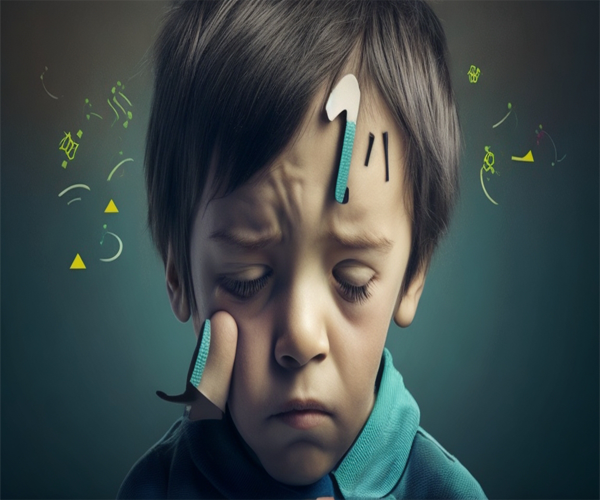

Dyscalculia
Affects a person’s ability to understand numbers and learn math facts.
Individuals with this type of learning disability demonstrate impaired math calculation skills and difficulty understanding numbers and math facts.
Dyscalculia is associated with weaknesses in fundamental number representation and processing, which results in difficulties with quantifying sets without counting, using nonverbal processes to complete simple numerical operations, and estimating relative magnitudes of sets.

Dysgraphia
Affects a person’s handwriting ability and fine motor skills.
Dysgraphia is a learning disability which involves impaired ability to produce legible and automatic letter writing and often numeral writing, the latter of which may interfere with math.
Dysgraphia is rooted in difficulty with storing and automatically retrieving letters and numerals.
Dyslexia
Affects reading and related language-based processing skills.
Dyslexia is characterized by deficits in accurate and fluent word recognition.
Individuals with dyslexia struggle with word recognition, decoding, and spelling.
Reading comprehension is sometimes impaired due to very poor word reading skills.

Non-Verbal Learning Disabilities
Research indicates that nonverbal learning disabilities are associated with impairment in three broad areas, including motoric skills, visual-spatial organizational memory, and social abilities.
Individuals with this type of learning disability have a well-developed vocabulary, as well as strong reading recognition ability and rote language skills.